nitta yoshihiro portfolio
作ったゲーム
メイン作品
1.Aqua Ball
プレビュー
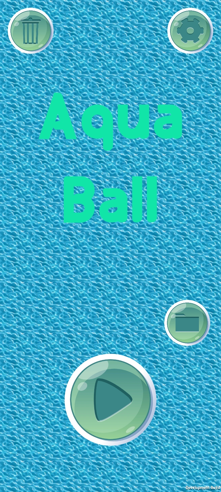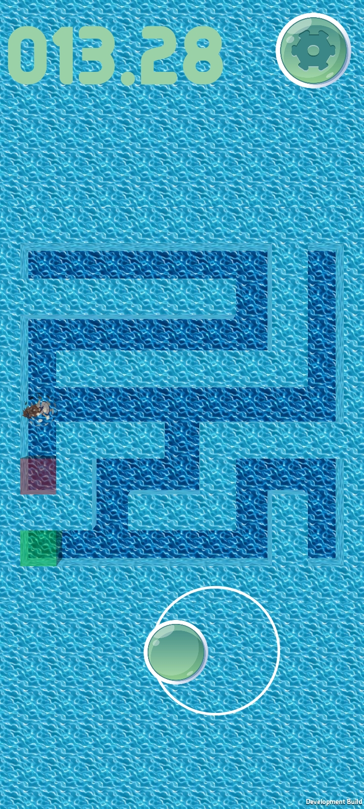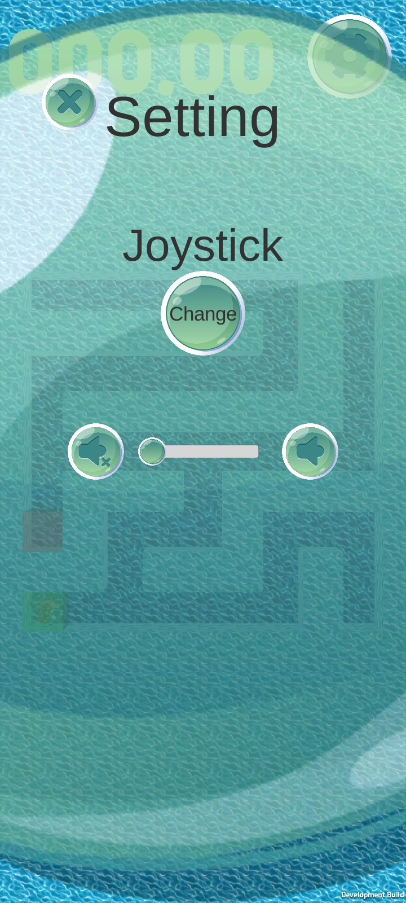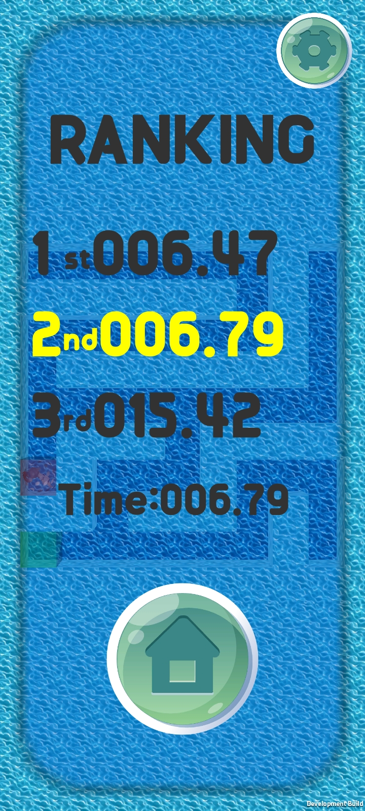
説明
水上での遊具アクアボールをイメージした、緑のスタートから赤のゴールまでのタイムを競うゲーム。マップを変えて競うこともできます。
AquaBall Repositorie(github)
AquaBall 作品リンク
※Windows作品は操作設定を加速度センサーにした際、wasdのキー操作になります。
2.OneFloorAction
プレビュー
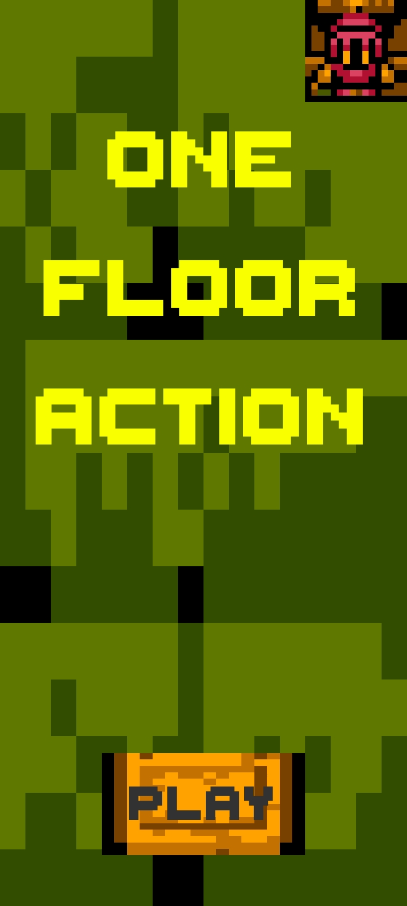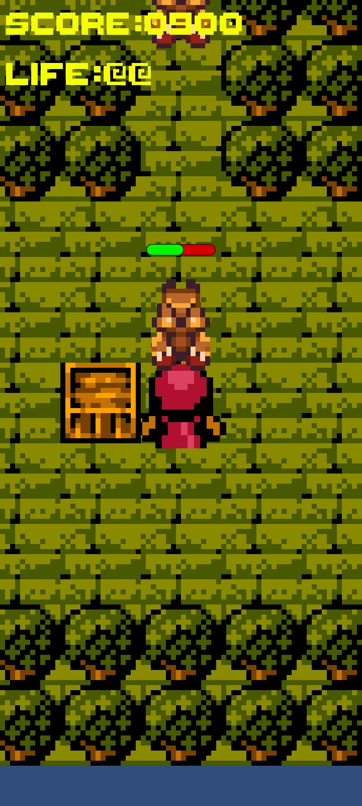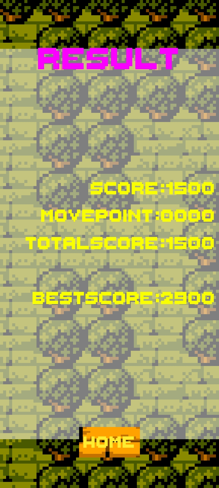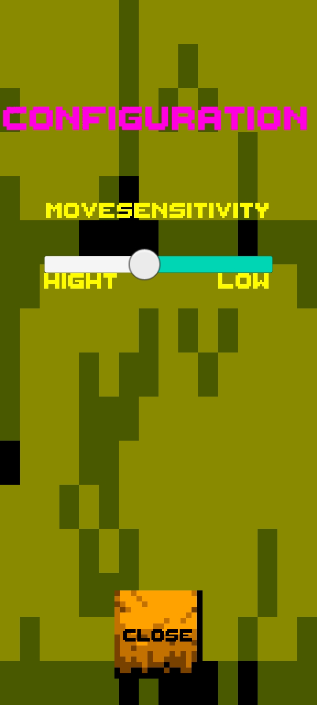
説明
毎回変わるマップで敵を倒しつつベストスコアを目指すゲーム
OneFloorAction
Repositorie(github)
3.RollingBarrel（１dayゲーム作品）
プレビュー
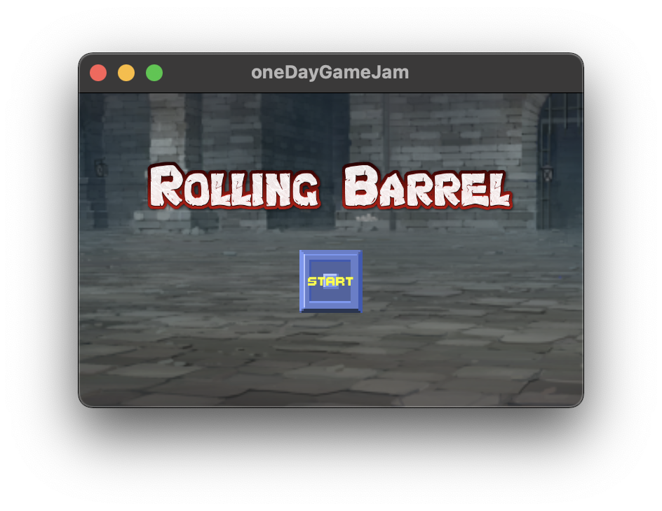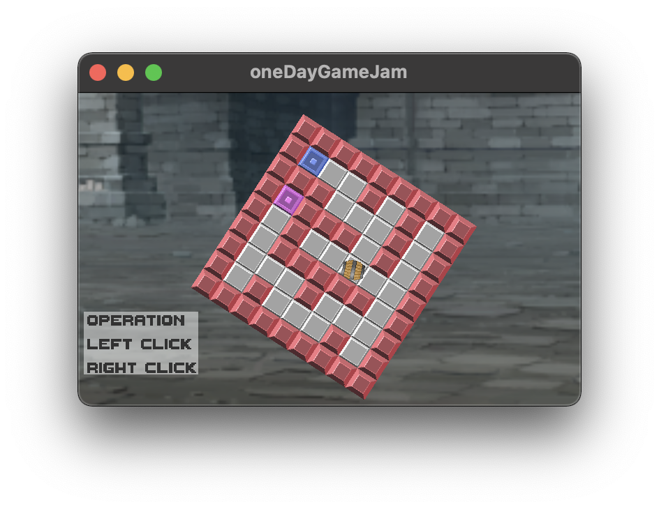
説明
樽を青いマスから赤いマスに転がすゲームです（マップを回転させます）
oneDayGameJam
Repositorie(github)
4.flybird
プレビュー
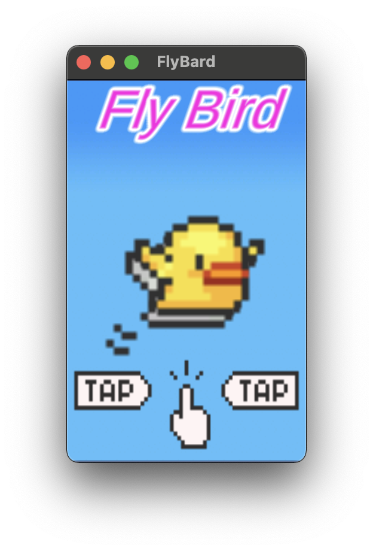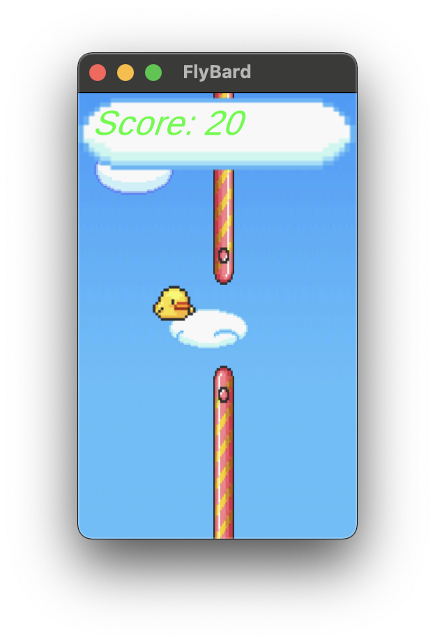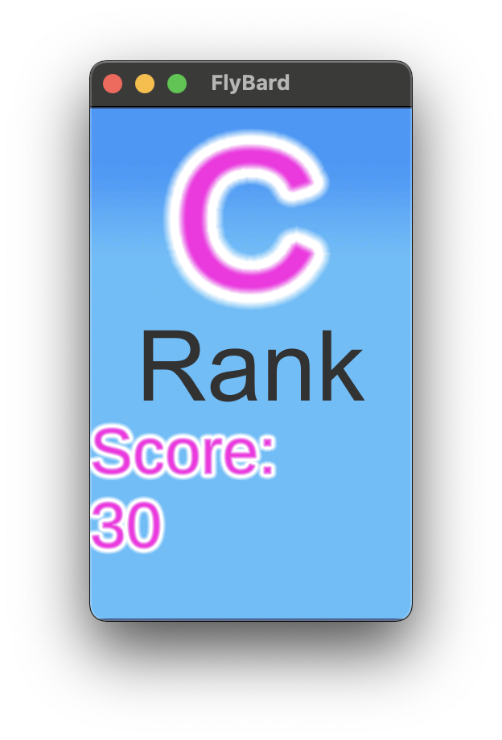
説明
ゲートをくぐってポイントを稼ぐゲームです
flybird Repositorie(github)